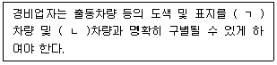
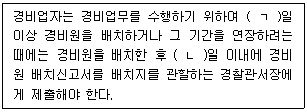
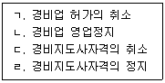
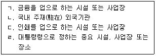

경비지도사-2차(경비업법) (2022-11-12 기출문제)
1. 경비업법령상 집단민원현장으로 옳지 않은 것은?
- 「노동조합 및 노동관계조정법」에 따라 노동관계 당사자가 노동쟁의 조정신청을 한 사업장 또는 쟁의행위가 발생한 사업장
- 「공유토지분할에 관한 특례법」에 따라 공유토지에 대한 소유권행사와 토지의 이용에 문제가 있는 장소
- 「도시 및 주거환경정비법」에 따른 정비사업과 관련하여 이해대립이 있어 다툼이 있는 장소
- 「행정대집행법」에 따라 대집행을 하는 장소
(정답률: 36%)

2. 경비업법령상 경비업 허가사항 등의 변경신고서 제출 시 첨부서류로 허가증 원본을 필요로 하는 경우가 아닌 것은?
- 법인의 임원 변경
- 법인의 대표자 변경
- 법인의 명칭 변경
- 법인의 주사무소 또는 출장소 변경
(정답률: 41%)
3. 경비업법령상 경비업을 영위하는 법인의 임원 결격사유에 해당하지 않는 것은?
- 피성년후견인
- 피한정후견인
- 파산선고를 받고 복권되지 아니한 자
- 금고 이상의 형의 선고를 받고 그 형이 실효되지 아니한 자
(정답률: 34%)
4. 경비업법령상 기계경비업자가 오경보의 방지를 위해 계약상대방에게 설명하여야 할 사항으로 옳지 않은 것은?
- 당해 기계경비업무와 관련된 관제시설 및 출장소의 명칭ㆍ소재지
- 기계경비업자가 경비대상시설에서 발생한 경보를 수신한 경우에 취하는 조치
- 기계경비업무용 기기의 설치장소 및 종류와 그밖의 기계장치의 개요
- 기계경비지도사의 명단ㆍ배치일자ㆍ배치장소와 출동차량의 대수
(정답률: 25%)
5. 경비업법령상 경비지도사 및 경비원의 결격사유로 옳지 않은 것은?
- 「형법」제114조(범죄단체 등의 조직)의 죄를 범하여 벌금형을 선고받은 날부터 10년이 지나지 아니하거나 금고 이상의 형을 선고받고 그 집행이 종료된(종료된 것으로 보는 경우를 포함한다) 날 또는 집행이 유예ㆍ면제된 날부터 10년이 지나지 아니한 자
- 「형법」제330조(야간주거침입절도)의 죄를 범하여 벌금형을 선고받은 날부터 5년이 지나지 아니하거나 금고 이상의 형을 선고받고 그 집행이 유예된 날부터 5년이 지나지 아니한 자
- 「아동ㆍ청소년의 성보호에 관한 법률」제7조(아동ㆍ청소년에 대한 강간ㆍ강제추행 등)의 죄를 범하여 치료감호를 선고받고 그 집행이 종료된 날 또는 집행이 면제된 날부터 10년이 지나지 아니한 자
- 「성폭력범죄의 처벌 등에 관한 특례법」제3조(특수강도강간 등)의 죄를 범하여 벌금형을 선고받은 날부터 5년이 지나지 아니하거나 금고 이상의 형을 선고받고 그 집행이 유예된 날부터 5년이 지나지 아니한 자
(정답률: 32%)
6. 경비업법령상 경비지도사시험 등에 관한 설명으로 옳은 것은?
- 경비지도사시험은 매년 1회 이상 시행한다.
- 경비지도사시험에 관하여 필요한 사항은 행정안전부령으로 정한다.
- 경찰청장은 경비지도사시험의 실시계획에 따라 시험을 실시하고자 하는 때에는 응시자격ㆍ시험과목ㆍ시험일시ㆍ시험장소 및 선발예정인원 등을 시험시행일 6개월 전까지 공고하여야 한다.
- 「경비업법」에 따른 특수경비업무에 2년 이상 종사하고 행정안전부령으로 정하는 교육과정을 이수한 사람은 경비지도사 제1차 시험을 면제한다.
(정답률: 28%)
7. 경비업법령상 경비지도사의 직무로 규정되지 않은 것은?
- 경비업체와의 연락방법에 대한 지도
- 경비현장에 배치된 경비원에 대한 순회점검 및 감독
- 경비원의 지도ㆍ감독ㆍ교육에 관한 계획의 수립ㆍ실시 및 그 기록의 유지
- 집단민원현장에 배치된 경비원에 대한 지도ㆍ감독
(정답률: 38%)
8. 경비업법령상 일반경비원 신임교육의 제외대상이 아닌 사람은?
- 「경찰공무원법」에 따른 경찰공무원으로 근무한 경력이 있는 사람
- 「대통령 등의 경호에 관한 법률」에 따른 경호공무원 또는 별정직공무원으로 근무한 경력이 있는 사람
- 「소방공무원법」에 따른 소방공무원으로 근무한 경력이 있는 사람
- 「군인사법」에 따른 부사관 이상으로 근무한 경력이 있는 사람
(정답률: 46%)
9. 경비업법령상 특수경비원의 무기 관리수칙 등에 관한 설명으로 옳은 것은?
- 무기를 대여받은 국가중요시설의 시설주는 무기를 지급받은 특수경비원으로 하여금 무기를 매주 1회 이상 손질하게 하여야 한다.
- 무기를 대여받은 국가중요시설의 시설주는 특수경비원에게 무기를 출납하고자 하는 때에는 탄약의 출납은 권총에 있어서는 1정당 15발 이내, 소총에 있어서는 1정당 7발 이내로 하여야 한다.
- 무기를 대여받은 국가중요시설의 시설주는 고의 또는 과실로 무기(부속품을 포함한다)를 빼앗기거나 무기가 분실ㆍ도난 또는 훼손되도록 한 특수경비원에 대하여 특수경비업자에게 교체 또는 징계 등의 조치를 요청하여야 한다.
- 무기를 대여받은 국가중요시설의 시설주는 무기를 수송하는 때에는 출발하기 전에 관할경찰서장에게 그 사실을 통보하여야 하며, 통보를 받은 관할경찰서장은 2인 이상의 무장경찰관을 무기를 수송하는 자동차 등에 함께 타도록 하여야 한다.
(정답률: 36%)
10. 경비업법령상 특수경비원의 의무에 관한 설명으로 옳은 것은?
- 특수경비원은 직무를 수행함에 있어 시설주ㆍ관할 경찰관서장 및 소속상사의 직무상 명령에 복종하여야 한다.
- 특수경비원은 시설주의 허가 또는 정당한 사유없이 경비구역을 벗어나서는 아니된다.
- 특수경비원은 경비업무의 정상적인 운영을 저해한다 하더라도 파업ㆍ태업이 아닌 다른 방법에 의한 쟁의행위는 가능하다.
- 특수경비원은 14세 미만의 자 또는 임산부에 대하여는 어떠한 경우라도 소총을 발사하여서는 아니된다.
(정답률: 31%)
11. 경비업법령상 경비원의 복장과 장비에 관한 설명으로 옳지 않은 것은?
- 경비업자는 경찰공무원 또는 군인의 제복과 색상 및 디자인 등이 명확히 구별되는 소속경비원의 복장을 정하여야 한다.
- 경비업자는 집단민원현장이 아닌 곳에서 신변보호업무를 수행하는 경비원에게도 소속경비업체를 표시한 이름표를 부착하도록 해야 한다.
- 누구든지 경비원이 휴대할 수 있는 장비를 임의로 개조하여 통상의 용법과 달리 사용함으로써 다른 사람의 생명ㆍ신체에 위해를 가하여서는 아니 된다.
- 경비원은 경비업무를 위하여 필요하다고 인정되는 상당한 이유가 있을 때에는 필요한 최소한도에서 경비업법령에서 정한 장비를 사용할 수 있다.
(정답률: 41%)
12. 경비업법령상 출동차량에 관한 내용이다. ( )에 들어갈 내용으로 옳은 것은?

- ㄱ: 소방, ㄴ: 군
- ㄱ: 소방, ㄴ: 구급
- ㄱ: 경찰, ㄴ: 군
- ㄱ: 경찰, ㄴ: 구급
(정답률: 39%)
13. 경비업법령상 결격사유 확인을 위한 범죄경력조회 등에 관한 설명으로 옳지 않은 것은?
- 관할 경찰관서장은 범죄경력조회 요청이 있는 경우에만 범죄경력조회를 할 수 있다.
- 경비업자는 선출하려는 임원이 결격사유에 해당하는지를 확인하기 위하여 범죄경력조회를 요청할 수 있다.
- 범죄경력조회 요청을 받은 시ㆍ도경찰청장 또는 관할 경찰관서장은 경비업자에게 그 결과를 통보할 때에는 결격사유에 해당하는지 여부만을 통보하여야 한다.
- 시ㆍ도경찰청장 또는 관할 경찰관서장은 경비업자의 임원, 경비지도사 또는 경비원이 결격사유에 해당하는 사실을 알게 된 때에는 경비업자에게 그 사실을 통보하여야 한다.
(정답률: 35%)
14. 경비업법령상 경비원의 명부와 배치허가 등에 관한 설명으로 옳지 않은 것은?
- 경비업자는 시설경비업무 또는 신변보호업무 중 집단민원현장에 일반경비원을 배치하는 경우에는 경비원을 배치하기 24시간 전까지 행정안전부령으로 정하는 바에 따라 배치허가를 신청하여야 한다.
- 경비업자가 집단민원현장이 아닌 곳에서 신변보호업무를 수행하는 일반경비원을 배치하는 경우에는 경비원을 배치하기 전까지 관할 경찰관서장에게 신고하여야 한다.
- 경비업자가 특수경비원을 배치하는 경우에는 경비원을 배치하기 전까지 관할 경찰관서장에게 신고하여야 한다.
- 경비업자는 경비원을 배치하여 경비업무를 수행하게 하는 때에는 배치된 경비원의 인적 사항과 배치일시ㆍ배치장소 등 근무상황을 기록하여 보관하여야 한다.
(정답률: 34%)
15. 경비업법령상 경비원의 배치신고에 관한 내용이다. ( )에 들어갈 숫자로 옳은 것은?

- ㄱ: 10, ㄴ: 7
- ㄱ: 15, ㄴ: 10
- ㄱ: 20, ㄴ: 7
- ㄱ: 30, ㄴ: 10
(정답률: 34%)
16. 경비업법령상 경비업 허가의 취소사유로 옳지 않은 것은?
- 경비업자가 허가받은 경비업무외의 업무에 경비원을 종사하게 한 때
- 특수경비업자가 경비업 및 경비관련업외의 영업을 한 때
- 경비업자가 소속 경비원으로 하여금 경비업무의 범위를 벗어난 행위를 하게 한 때
- 경비업자가 정당한 사유없이 최종 도급계약 종료일의 다음 날부터 1년 이내에 경비도급실적이 없을 때
(정답률: 36%)
17. 경비업법령상 경비지도사자격의 취소 등에 관한 설명으로 옳지 않은 것은?
- 경찰청장은 기계경비지도사가 오경보방지 등을 위한 기기관리 감독의 직무를 위반하여 직무를 성실하게 수행하지 아니한 때에는 1년의 범위 내에서 그 자격을 정지시킬 수있다.
- 경찰청장은 경비지도사의 자격을 정지한 때에는 그 정지기간동안 경비지도사자격증을 회수하여 보관하여야 한다.
- 경찰청장은 경비지도사가 경찰청장 또는 시ㆍ도경찰청장의 명령을 위반한 때에는 1년의 범위 내에서 그 자격을 정지시킬 수 있다.
- 경찰청장은 경비지도사가 자격정지 기간 중에 경비지도사로 선임되어 활동한 때에는 1년의 범위 내에서 그 자격을 정지시킬 수 있다.
(정답률: 29%)
18. 경비업법령상 경찰청장 또는 시ㆍ도경찰청장이 청문을 실시해야 하는 행정처분에 해당하는 것을 모두 고른 것은?

- ㄱ, ㄷ
- ㄴ, ㄹ
- ㄱ, ㄴ, ㄷ
- ㄱ, ㄴ, ㄷ, ㄹ
(정답률: 31%)
19. 경비업법령상 경비협회에 관한 설명으로 옳지 않은 것은?
- 경비업자는 경비업무의 건전한 발전과 경비원의 자질향상 및 교육훈련 등을 위하여 대통령령이 정하는 바에 따라 경비협회를 설립할 수 있다.
- 경비협회에 관하여 경비업법에 특별한 규정이 있는 것을 제외하고는 민법중 조합에 관한 규정을 준용한다.
- 경비협회의 업무로는 경비원의 후생ㆍ복지에 관한 사항도 포함된다.
- 경비협회는 법인으로 한다.
(정답률: 30%)
20. 경비업법령상 경비협회의 공제사업에 관한 내용으로 옳지 않은 것은?
- 경비협회는 경비업자의 손해배상책임을 보장하기 위한 공제사업을 할 수 있다.
- 경비협회는 경비원의 복지향상을 위한 공제사업을 할 수 없다.
- 경비협회는 공제사업을 하고자 하는 때에는 공제규정을 제정하여야 한다.
- 경비협회는 경비업자가 경비업을 운영할 때 필요한 입찰보증, 계약보증(이행보증을 포함한다), 하도급보증을 위한 공제사업을 할 수 있다.
(정답률: 32%)
21. 경비업법령상 감독 및 보안지도ㆍ점검에 관한 설명으로 옳지 않은 것은?
- 시ㆍ도경찰청장 또는 관할 경찰관서장은 소속 경찰공무원으로 하여금 관할구역안에 있는 경비업자의 주사무소 및 출장소와 경비원배치장소에 출입하여 근무상황 및 교육훈련상황 등을 감독하며 필요한 명령을 하게 할 수 있다.
- 시ㆍ도경찰청장 또는 관할 경찰관서장은 경비업자 또는 배치된 경비원이 「폭력행위 등 처벌에 관한 법률」을 위반하는 행위를 하는 경우 그 위반행위의 중지를 명할 수있다.
- 관할 경찰서장은 특수경비업자에 대하여 연 2회 이상의 보안지도ㆍ점검을 실시하여야 한다.
- 경찰청장 또는 시ㆍ도경찰청장은 경비업무의 적정한 수행을 위하여 경비업자 및 경비지도사를 지도ㆍ감독하며 필요한 명령을 할 수 있다.
(정답률: 21%)
22. 경비업법령상 경비업자의 손해배상책임이 발생하는 것은?
- 경비원이 업무수행중이 아닌 때에 고의로 경비대상에 손해가 발생하는 것을 방지하지 못한 경우
- 경비원이 업무수행중 무과실로 경비대상에 손해가 발생하는 것을 방지하지 못한 경우
- 경비원이 업무수행중 고의로 제3자에게 손해를 입힌 경우
- 경비원이 업무수행중이 아닌 때에 과실로 제3자에게 손해를 입힌 경우
(정답률: 33%)
23. 경비업법령상 경찰청장이 시ㆍ도경찰청장에게 위임할 수 있는 사항에 해당하지않는 것은?
- 경비지도사의 자격의 취소 및 정지에 관한 청문
- 경비지도사의 교육에 관한 업무
- 경비지도사의 자격의 취소
- 경비지도사의 자격의 정지
(정답률: 33%)
24. 경비업법령상 허가증 등의 수수료에 관한 설명으로 옳은 것은?
- 경비업 허가사항의 변경신고로 인한 허가증 재교부의 경우에는 1만원의 수수료를 납부하여야 한다.
- 경비지도사시험 응시수수료를 과오납한 경우에는 경찰청장은 과오납한 금액의 100분의 50을 반환하여야 한다.
- 경비업의 갱신허가를 받고자 하는 경우에는 2천원의 수수료를 납부하여야 한다.
- 경비지도사시험 시행일 20일 전까지 접수를 취소하는 경우에는 경찰청장은 응시수수료 전액을 반환하여야 한다.
(정답률: 30%)
25. 경비업법령상 위반행위를 한 행위자에 대한 법정형이 다른 것은?
- 경비업무 도급인이 그 경비업무를 수급한 경비업자의 경비원 채용 시 무자격자나 부적격자 등을 채용하도록 관여하거나 영향력을 행사한 경우
- 경비원이 경비업법령에서 정한 장비 외에 흉기 또는 그 밖의 위험한 물건을 휴대하고 경비업무를 수행한 경우
- 경비원이 직무를 수행함에 있어 타인에게 위력을 과시하는 등 경비업무의 범위를 벗어난 행위를 한 경우
- 경비업자가 배치허가 신청의 내용을 거짓으로 한 것이 발각되어 경찰관서장이 배치폐지 명령을 하였으나 이에 따르지 아니한 경우
(정답률: 19%)
26. 경비업법령상 과태료의 부과기준에 관한 설명으로 옳은 것은?
- 경비원의 복장에 관한 신고를 하지 않고 집단민원현장에 경비원을 배치한 경우에는 위반 횟수가 2회이면 부과되는 과태료 금액은 600만원이다.
- 관할 경찰관서장이 무기의 적정 관리를 위하여 무기를 대여받은 시설주에 대하여 감독상 필요한 명령을 하였으나 정당한 이유없이 이행하지 않은 경우에는 위반 횟수에 관계없이 부과되는 과태료 금액은 500만원이다.
- 이름표를 부착하게 하지 않거나, 신고된 동일 복장을 착용하게 하지 않고 집단민원현장에 경비원을 배치한 경우에는 위반 횟수가 1회이면 부과되는 과태료 금액은 300만원이다.
- 집단민원현장에 배치되는 일반경비원의 명부를 그 배치 장소에 비치하지 않은 경우에는 위반 횟수가 3회 이상이면 부과되는 과태료 금액은 1200만원이다.
(정답률: 15%)
27. 경비업법령상 경비원이 경비업무 수행 중에 경비업법령에서 정한 장비 외에 흉기 또는 그 밖의 위험한 물건을 휴대하고 죄를 범한 경우, 그 죄에 정한 형의 2분의 1까지 가중처벌되는 형법상의 범죄가 아닌 것은?
- 특수폭행죄(형법 제261조)
- 폭행치사상죄(형법 제262조)
- 특수협박죄(형법 제284조)
- 특수공갈죄(형법 제350조의2)
(정답률: 9%)
28. 청원경찰법령상 청원경찰의 배치 대상 기관ㆍ시설ㆍ사업장에 해당하는 것을 모두 고른 것은?

- ㄱ, ㄴ
- ㄴ, ㄷ
- ㄱ, ㄴ, ㄷ
- ㄱ, ㄴ, ㄹ
(정답률: 82%)
29. 청원경찰법령상 청원경찰의 직무에 관한 설명으로 옳지 않은 것은?
- 청원경찰은 청원경찰의 배치 결정을 받은 자와 배치된 기관ㆍ시설 또는 사업장 등의 구역을 관할하는 시ㆍ도경찰청장의 감독을 받는다.
- 청원경찰은 「경찰관 직무집행법」에 따른 직무 외의 수사활동 등 사법경찰관리의 직무를 수행해서는 아니 된다.
- 청원경찰은 그 경비구역만의 경비를 목적으로 필요한 범위에서 「경찰관 직무집행법」에 따른 경찰관의 직무를 수행한다.
- 청원경찰이 직무를 수행할 때에는 경비 목적을 위하여 필요한 최소한의 범위에서 하여야 한다.
(정답률: 85%)
30. 청원경찰법령상 청원경찰의 근무요령에 관한 설명으로 옳은 것은?
- 소내근무자는 근무 중 특이한 사항이 발생하였을 때에는 지체 없이 청원주 또는 시ㆍ도경찰청장에게 보고하고 그 지시에 따라야 한다.
- 대기근무자는 입초근무에 협조하거나 휴식하면서 불의의 사고에 대비한다.
- 순찰근무자는 청원주가 지정한 일정한 구역을 단독 또는 복수로 난선순찰을 하되, 청원주가 필요하다고 인정할 때에는 정선순찰 또는 요점순찰을 할 수 있다.
- 입초근무자는 경비구역의 정문이나 그 밖의 지정된 장소에서 경비구역의 내부, 외부 및 출입자의 움직임을 감시한다.
(정답률: 70%)
31. 청원경찰법령상 청원경찰의 배치에 관한 설명으로 옳지 않은 것은?
- 청원경찰을 배치받으려는 자는 대통령령으로 정하는 바에 따라 관할 시ㆍ도경찰청장에게 청원경찰 배치를 신청하여야 한다.
- 시ㆍ도경찰청장은 청원경찰 배치 신청을 받으면 지체 없이 그 배치 여부를 결정하여 신청인에게 알려야 한다.
- 시ㆍ도경찰청장은 청원경찰 배치가 필요하다고 인정하는 기관의 장 또는 시설ㆍ사업장의 경영자에게 청원경찰을 배치할 것을 요청할 수 있다.
- 청원경찰의 배치를 받으려는 자는 청원경찰 배치신청서에 경비구역 평면도 1부 또는 배치계획서 1부를 첨부해야 한다.
(정답률: 69%)
32. 청원경찰법령상 청원경찰의 임용권자로 옳은 것은?
- 청원주
- 경찰서장
- 경찰청장
- 시ㆍ도경찰청장
(정답률: 85%)
33. 청원경찰법령상 청원경찰에 대한 징계의 종류로 옳은 것은?
- 강등
- 견책
- 면직
- 직위해제
(정답률: 79%)
34. 청원경찰법령상 청원경찰의 퇴직에 관한 설명으로 옳지 않은 것은?
- 임용결격사유에 해당될 때 당연 퇴직된다.
- 청원경찰의 배치가 폐지되었을 때 당연 퇴직된다.
- 나이가 60세가 되었을 때 당연 퇴직된다.
- 국가기관이나 지방자치단체에 근무하는 청원경찰의 명예퇴직에 관하여는 「경찰공무원법」을 준용한다.
(정답률: 79%)
35. 청원경찰법령상 청원경찰의 봉급 산정의 기준이 되는 경력에 산입되지 않는 것은?
- 청원경찰로 근무한 경력
- 군 또는 의무경찰에 복무한 경력
- 수위ㆍ경비원ㆍ감시원 또는 그 밖에 청원경찰과 비슷한 직무에 종사하던 사람이 해당 사업장의 청원주에 의하여 청원경찰로 임용된 경우에는 그 직무에 종사한 경력
- 국가기관 또는 공공단체에서 근무하는 청원경찰에 대해서는 국가기관 또는 공공단체에서 비상근(非常勤)으로 근무한 경력
(정답률: 85%)
36. 청원경찰법령상 청원주가 부담하여야 하는 청원경찰경비에 해당하지 않는 것은?
- 청원경찰에게 지급할 봉급과 각종 수당
- 청원경찰의 피복비
- 청원경찰의 교육비
- 청원경찰의 업무추진비
(정답률: 92%)
37. 청원경찰법령상 청원경찰의 효율적인 운영을 위하여 청원주를 지도하며 감독상 필요한 명령을 할 수 있는 자는?
- 경찰서장
- 시ㆍ도경찰청장
- 지구대장 또는 파출소장
- 경찰청장
(정답률: 79%)
38. 청원경찰법령상 벌칙과 과태료에 관한 설명으로 옳은 것은?
- 파업, 태업 또는 그 밖에 업무의 정상적인 운영을 방해하는 쟁의행위를 한 청원경찰은 1년 이하의 징역 또는 1천만원 이하의 벌금에 처한다.
- 시ㆍ도경찰청장의 배치 결정을 받지 아니하고 청원경찰을 배치하거나 시ㆍ도경찰청장의 승인을 받지 아니하고 청원경찰을 임용한 청원주는 1년 이하의 징역 또는 1천만원 이하의 벌금에 처한다.
- 정당한 사유 없이 경찰청장이 고시한 최저부담기준액 이상의 보수를 지급하지 아니한 청원주는 1년 이하의 징역 또는 1천만원 이하의 벌금에 처한다.
- 시ㆍ도경찰청장의 감독상 필요한 명령을 정당한 사유 없이 이행하지 아니한 청원주는 1년 이하의 징역 또는 1천만원 이하의 벌금에 처한다.
(정답률: 59%)
39. 청원경찰법령상 청원주의 무기관리수칙에 관한 설명으로 옳지 않은 것은?
- 청원주가 무기와 탄약을 대여받았을 때에는 경찰청장이 정하는 무기ㆍ탄약 출납부 및 무기장비 운영카드를 갖춰 두고 기록하여야 한다.
- 청원주는 무기와 탄약의 관리를 위하여 관리책임자를 지정하고 관할 경찰서장에게 그 사실을 통보하여야 한다.
- 무기고와 탄약고에는 이중 잠금장치를 하고, 열쇠는 숙직책임자가 보관하되, 근무시간 이후에는 관리책임자에게 인계하여 보관시켜야 한다.
- 청원주는 경찰청장이 정하는 바에 따라 매월 무기와 탄약의 관리 실태를 파악하여 다음달 3일까지 관할 경찰서장에게 통보하여야 한다.
(정답률: 71%)
40. 청원경찰법령상 청원주와 관할 경찰서장이 공통으로 갖춰 두어야 할 문서와 장부로 옳은 것은?
- 무기ㆍ탄약 출납부
- 교육훈련 실시부
- 무기장비 운영카드
- 무기ㆍ탄약 대여대장
(정답률: 58%)